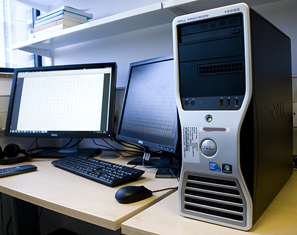

Introduction
Over the last couple of months I've been asked for help analyzing several different sets of high-throughput sequencing data. This is not really my area, but I can see why I'm being approached: it's obvious that I use computers and big computers are required to extract information from these data. So, as a note to my future self and as a pointer for others I decided to write three posts describing some of the computing workflows I've been using. I've been pleasantly surprised at how straightforward it is. Please add any criticism to this post on Google+. I'd love to learn how to do better and update these posts.
Raw sequencing data

One project I'm involved with is comparing the resequenced genotypes of several S. cerevisiae populations. Cell samples were prepared in the lab and sent off to an external sequencing service provider, who carried out paired-end sequencing on an Illumina machine. About a month later, they sent an email informing us that the data were ready and pointed us to a password protected webserver where we could download them. Data in this case consisted of 24 .fastq.gz files (2 per sample) approximately 1.2Gb each. You can see some examples of the contents of .fastq files, and some tips for how to read them in Darren Wilkinson's post on processing sequencing data. Below is a snippet of uncompressed raw data from a .fastq file:
@HISEQ:178:C23RCACXX:5:1101:1913:2210 1:N:0:CGATGT CGTGGATCTTAGCAGAATGGGCTATAATTGGGAAGGTAACGAATTTTCATATCACATGCTGCTTGTATCTCAATACATGTTGAATGCAGGATTACTCCAAA + 1=1=ABDDFBECECBECBDAF3FEE?E@4A+:CBED?DGICFGDCE@?999?/?*9CBBAEE3@CFF@;CE7@EE?E:?CABB3?@EAA@((5@@###### @HISEQ:178:C23RCACXX:5:1101:2634:2072 1:N:0:CGATGT ACTCCCATCGCTCTACATTATCCGATCCAAAGCAGATGTTGAGAAAAGCATCCACTGGTAGCTCAAACGATCCAAGCGCTATGACTCCTTTTTCTTCAGTA + E@@DDDDDFFDAFGIII@HBHFCGCFHEB9?@GHGEFFHBFCHGGHIIFCGI)B=C@GIGG:DHGIGE/=B;;36;??;@;?ACCCCC:>CCC>CC>CCE: @HISEQ:178:C23RCACXX:5:1101:2675:2124 1:N:0:CGATGT AATTTCACGTACTTTTTCACTCTCTTTTCAAAGTTCTTTTCATCTTTCCATCACTGTACTTGTTCGCTATCGGTCTCTCGCCAATATTTAGCTTTAGATGG + @@@FFDFFHDFFFIIIJ;CEIFGHHGIJHIJJJGHEGHIJEHIHIIIGEG>F>GGHHJHGIHIIIIIGHIJIBEAAEEEFDDDDCDDEDCDDDCDCCDD@C @HISEQ:178:C23RCACXX:5:1101:2824:2166 1:N:0:CGATGT TCATTAATGTACATGTAATAGAGATAGAACCACGTGTGTAGAATAGATTCAAGCACAACAATTCTGGAAATCCATTTGTGGAGAGGTAACAATGCTAAGTA + ?@@=DDDDF????GHBGGDH@HG@C@EDH?CEDAFG?EF4?BFAEEBE@4?BGBDGCH@@FHGBCFHGIEHFG@DGEHHFE:?DEE766@ECCCCA@CC5;
Computing requirements
At this point it's probably worth thinking about the type of computing facilities required to handle and analyse these data comfortably.
Data transfer rate/bandwidth
The first hurdle to overcome is downloading the data. My computers are part of the Newcastle University network. Newcastle University is part of the JANET network and so has very fast internet indeed. This tool quotes my internet download speed as 95Mbps. For comparison, a fast connection from a public ISP will give an actual download speed of about 50Mbps. It took me 1 hour to download all 28.3Gb of data.
Hard Disk space
The files supplied are compressed (thus the .gz file extension). If you want to store the uncompressed versions (note, there are ways around that), they come to about 88Gb. Also, many of the output files from the analysis are of similar size. Overall, I would say that having about 350Gb of free disk-space to work with a dataset of this kind of size would be more than adequate: you would never have to think twice about whether to uncompress a file or whether it is worth keeping. Many of the files generated could be deleted before archiving.
Processers (CPUs)
Probably the most CPU intensive task in this workflow is read alignment (see below). The software I use for alignment is capable of taking advantage of multiple CPUs at once to speed things up. Using 12 physical 3.05Mhz CPUs I can align the reads from a pair of files in 10 minutes, aligning reads for all samples in 2 hours. Since this is not an every day task, this number of CPUs is overkill. I would expect 4 to be more than adequate.
Memory (RAM)
The tools I use for analysis are not that memory hungry. I haven't paid close attention, but I don't think I used more than 3Gb of RAM at any one time.
Working directory
Analysing high-throughput sequencing data involves generating several types of intermediate files. It's probably best to try to be organised and create a working directory with several sub-directories to store them all. Below is the directory structure I use. I put raw data in the 'data' directory and scripts for analysis in the high-level working directory. I downloaded a reference sequence, against which to align reads, from the Sacchromyces Genome Database website, uncompressed it and placed the files in the 'references_SGD' directory. The remaining directories are automatically populated with output files by running workflow scripts (see below).
.
├── alignments
├── data
├── indices
├── pileups
└── reference_SGD
├── chromosomes
└── S288C_reference_genome_R64-1-1_20110203
Software installation
bowtie2
bowtie2 is a very impressive, fast, open-source, command-line tool to align short sequence reads to a reference sequence (Langmead & Salzberg (2012)). It's easy to install on Linux and Windows.
To install bowtie2 under Linux, first download the source code package (e.g. bowtie2-2.1.0-source.zip) from the files tab on the Bowtie sourceforge page. Then unzip to a target directory, navigate to the target directory and execute "make" to compile for your machine. You will probably want to export the target directory to your path before use.
If you'd prefer to install bowtie2 under Windows, binary files (including 64-bit binaries) are also available from the Bowtie sourceforge page. Unzip the files to a target directory and add that directory (e.g. the directory containing the file "bowtie2-align.exe") to your path, as described here.
As an example of using bowtie2 from the terminal (cmd.exe under windows, shell terminal under linux), using the directory structure outlined above, if you navigate to the upper-level directory and type the following line of text, followed by enter, this will read in the reference sequence and create an 'index' file in the indices. Such indices are required for bowtie2 to quickly search the genome.
bowtie2-build reference_SGD/S288C_reference_genome_R64-1-1_20110203/S288C_reference_sequence_R64-1-1_20110203.fsa indices/SGD_S288C
To actually perform paired-end alignment, using 12 CPUs, write a command following this example (adjusting filenames to suit your case):
bowtie2-align -x indices/SGD_S288C -1 data/SampleA_1_sequence.fq -2 data/SampleA_2_sequence.fq -S alignments/SampleA.sam -p 12 --end-to-end
samtools
bowtie2 outputs alignments as uncompressed .sam files. Many other tools for further analysis need alignments to be in the alternative, compressed, binary .bam format. Fortunately samtools is another amazing, open-source, command-line tool which can do that (and many other useful things) for us (Li et al. (2009)).
To install samtools under Linux, check out the most recent source code from github. If you don't currently have git installed on your system, you will need to do that first. In Ubuntu, for example, you can do this by executing the following command in a terminal:
sudo apt-get install git
Then, check out a copy of the source code by executing the following (you probably want to execute this in your home directory):
git clone git://github.com/samtools/samtools.git
The last command makes a directory called samtools. Navigate into that directory and execute "make" to compile for your machine. You will probably want to export the following three directories to your path before use: samtools samtools/bcftools samtools/misc
To install samtools under Windows, you can download a .zip file containing pre-compiled binaries here. As for bowtie2, unzip the files to a target directory and add that directory to your path, as described here. Note that for generating consensus .fastq files (in a later post), you will additionally need to have a working perl environment, and a copy of the vcfutils.pl script, which you can download from the samtools github page.
Scripting to automate workflows
A useful feature of code-based computational work (scripting and programming) is that the code that you write (computer instructions written as plain text) is both the means by which work is carried out and a perfect record of past actions. This is unlike manual recording of work (e.g. writing records into experimental lab notebooks) where an extra layer of human interpretation can occasionally lead to omissions or errors. Code-based work is also unlike GUI-based computation, which is based on user interaction with mouse-clicks and windows and typically leaves no trace of how analysis was carried out. GUI-based computation (e.g. producing plots using Microsoft Excel) can typically only be replicated by manual execution of the same series of tasks, much like manual work. On the other hand, very complicated code-based workflows, once created, can be repeated trivially by executing a single command, or by clicking on a single icon, for example. Similarly, code describing a complicated workflow can be changed easily by editing the underlying text file. Since code is just plain text, it can easily be edited, saved, copied, distributed and archived. Given the advantages of code-based work, the fact that bowtie2 and samtools are command-line tools should be seen as a strong feature. Even if you are not familiar with this way of working, it is worth spending a little time and effort coming to grips with command-line tools, it will likely save you a great deal of time, even in the short-term.
Linux shell script for alignment
Using the bash shell scripting language it is possible to write a short script to automate analysis of these files. The script below uses bowtie2 to create an index of a reference genome and then aligns each of a set of samples to that reference genome. It then uses samtools to convert the .sam alignment files to the more useful .bam format, generating sorted versions and indices for these files.
Scripting and programming languages have a particular vocabulary and syntax. Similarly to human languages, they are not intuitive or obvious to people who are unfamilar with them. Fortunately, the vocabulary and syntax are much simpler than human languages and there are many excellent resources online to help with the process of learning, translating or writing in these languages. Lines preceded by a '#' in the code below are not used to carry out any actions, but are just human-readable descriptions of the purpose of the surrounding code.
Windows batch script for alignment
The same automated workflow can be achieved under Windows by writing a batch file. You can see a batch file which carries out the same tasks as the shell script above here. Note that in this batch file, human-readable descriptions of the purpose of the code are preceded by a '::'. Batch files are written in a different scripting language which is not as flexible as the Linux equivalent, but are still suitable for this analysis. However, one disadvantage of using batch scripts is that the list of sample IDs to iterate over must be read from a separate file (you can download an example file here).
Alignment file output
After all that effort, the data that comes out at the end (the uncompressed .sam files at least) look like the example snippet below. My next post will demonstrate how to get information from alignment files (particularly .bam files).
@HD VN:1.0 SO:unsorted @SQ SN:ref|NC_001133| LN:230218 @SQ SN:ref|NC_001134| LN:813184 @SQ SN:ref|NC_001135| LN:316620 @SQ SN:ref|NC_001136| LN:1531933 @SQ SN:ref|NC_001137| LN:576874 @SQ SN:ref|NC_001138| LN:270161 @SQ SN:ref|NC_001139| LN:1090940 @SQ SN:ref|NC_001140| LN:562643 @SQ SN:ref|NC_001141| LN:439888 @SQ SN:ref|NC_001142| LN:745751 @SQ SN:ref|NC_001143| LN:666816 @SQ SN:ref|NC_001144| LN:1078177 @SQ SN:ref|NC_001145| LN:924431 @SQ SN:ref|NC_001146| LN:784333 @SQ SN:ref|NC_001147| LN:1091291 @SQ SN:ref|NC_001148| LN:948066 @SQ SN:ref|NC_001224| LN:85779 @PG ID:bowtie2 PN:bowtie2 VN:2.1.0 HISEQ:178:C23RCACXX:5:1101:2675:2124 99 ref|NC_001144| 463908 1 101M = 463960 153 AATTTCACGTACTTTTTCACTCTCTTTTCAAAGTTCTTTTCATCTTTCCATCACTGTACTTGTTCGCTATCGGTCTCTCGCCAATATTTAGCTTTAGATGG @@@FFDFFHDFFFIIIJ;CEIFGHHGIJHIJJJGHEGHIJEHIHIIIGEG>F>GGHHJHGIHIIIIIGHIJIBEAAEEEFDDDDCDDEDCDDDCDCCDD@C AS:i:0 XS:i:0 XN:i:0 XM:i:0 XO:i:0 XG:i:0 NM:i:0 MD:Z:101 YS:i:-2 YT:Z:CP HISEQ:178:C23RCACXX:5:1101:2675:2124 147 ref|NC_001144| 463960 1 101M = 463908 -153 CCTGTACTTGTTCGCTATCGGTCTCTCGCCAATATTTAGCTTTAGATGGAATTTACCACCCACTTAGAGCTGCATTCCCAAACAACTCGACTCTTCGAAGG #CC@C@CCDDBDDCDDDDDDDDDBBDDFFDDFHHHHEEBIIEIIJJJIGGFIFB7FD7IIHDG@GIIGGHDEIIHGIIJIGHHFFHEADEHGHFFFFFB@@ AS:i:-2 XS:i:-2 XN:i:0 XM:i:1 XO:i:0 XG:i:0 NM:i:1 MD:Z:0A100 YS:i:0 YT:Z:CP HISEQ:178:C23RCACXX:5:1101:3469:2199 83 ref|NC_001136| 889469 42 101M = 889282 -288 TTGTCGAAATCTATATATGCGCCGCCCTGGCAGGATCAGCAAATACAAGTTACTTGGAAAGTCGCGGCATAGAAAGTAGACACTTCTTTTGTCAAAGATTG EBDBDDCDDDCADDCE59DB@@B?DACCBBDCCDHGHHHCIHEGDGG@EGEHHIHEIGGG@GDEIIIIEIIGHHF@FFF:FCEEIGIIHHHHHFFFFFC@@ AS:i:0 XN:i:0 XM:i:0 XO:i:0 XG:i:0 NM:i:0 MD:Z:101 YS:i:0 YT:Z:CP HISEQ:178:C23RCACXX:5:1101:3469:2199 163 ref|NC_001136| 889282 42 101M = 889469 288 TAAGCCTGTTTCTAAACATGATCCCCAGGGTGAATATCTCCCATAGTGGCTGTGTTATTCTGTCTAAATGTGGCAGCTAAATAAGGTTTTTTCCAAGCTAT B@@FFFFFFHHHHIIJEGGIGIJIIIGJGE1CBEIIIJJJJJFHIJBGGHIF?FBFCHIGIJACHIHGGIDHGIHHHD;?DDEECC.;ACBD?AD@58:AC AS:i:0 XN:i:0 XM:i:0 XO:i:0 XG:i:0 NM:i:0 MD:Z:101 YS:i:0 YT:Z:CP HISEQ:178:C23RCACXX:5:1101:3694:2092 99 ref|NC_001144| 467018 1 101M = 467079 162 CTGCTGCCGGAAATGCTCTCTGTTCAAAAAGCTTTTACACTCTTGACCAGCGCACTCCGTCACCATACCATAGCACTCTTTGAGTTTCCTCTAATCAGGTT BB@FDFFFHHFHHGHIHGHIIGIIFFHIJJJJIHIJFGHIHIHIGBFHEHGHHIJIHHHHEDFFCACCACCCDDDDCCDDDCCBDDDECCDDEACCACDDC AS:i:0 XS:i:0 XN:i:0 XM:i:0 XO:i:0 XG:i:0 NM:i:0 MD:Z:101 YS:i:-2 YT:Z:CP HISEQ:178:C23RCACXX:5:1101:3694:2092 147 ref|NC_001144| 467079 1 101M = 467018 -162 CCCATACCATAGCACTCTTTGAGTTTCCTCTAATCAGGTTCCACCAAACAGATACCCCGGTGTTTCACGGAATGGTACGTTTGATATCGCTGATTTGAGAG #CDCCCDDDDEDDCCCDDCCDCDDBBDCCCADC?DEDCA;FFDFHHHHHHHDB@JJJIJJJIHFDJIHGDHGIJJJJIJIHFHHGGHJHHFDFFDDDDBBB AS:i:-2 XS:i:-2 XN:i:0 XM:i:1 XO:i:0 XG:i:0 NM:i:1 MD:Z:0A100 YS:i:0 YT:Z:CP HISEQ:178:C23RCACXX:5:1101:1913:2210 99 ref|NC_001146| 451329 42 101M = 451531 303 CGTGGATCTTAGCAGAATGGGCTATAATTGGGAAGGTAACGAATTTTCATATCACATGCTGCTTGTATCTCAATACATGTTGAATGCAGGATTACTCCAAA 1=1=ABDDFBECECBECBDAF3FEE?E@4A+:CBED?DGICFGDCE@?999?/?*9CBBAEE3@CFF@;CE7@EE?E:?CABB3?@EAA@((5@@###### AS:i:-3 XN:i:0 XM:i:1 XO:i:0 XG:i:0 NM:i:1 MD:Z:30T70 YS:i:-7 YT:Z:CP HISEQ:178:C23RCACXX:5:1101:1913:2210 147 ref|NC_001146| 451531 42 101M = 451329 -303 TCAAATAAAGTTATGGGGGCCATGTCGATATGTGCTGGCTCGTTTGTTGATTTTTATGGTCGTAATCAAGGCACAAAAATCTCGTCACATTATACATTTTC #############@5895(9DDBDB@AAE:CA@=@B9=:;/2@GFEDC=;E9/3???6))F?1*BED9?4DCEE?IGGGFECEHEE:DE,,FD?B;=D?;8 AS:i:-7 XN:i:0 XM:i:3 XO:i:0 XG:i:0 NM:i:3 MD:Z:10G7T33G48 YS:i:-3 YT:Z:CP HISEQ:178:C23RCACXX:5:1101:3259:2171 99 ref|NC_001141| 127803 42 101M = 127987 285 AACCGCTATTTTTGGTTTTATCTTCGTTTCTTTCTCCTGAACGACATTCGTCACGAAAATTGCGGCGGAAAATTTCCTGATGCGGACACTTTTTCCCGATC E?@+B@DDHFHFDHIFE;@EFFGGF?:??CGHGDHDGHIIIGHGFGHG8C8@CGEGHEEBDDECABBBEE;34ECE@CCCACEE9505((:@AC3ECB@E@ AS:i:0 XN:i:0 XM:i:0 XO:i:0 XG:i:0 NM:i:0 MD:Z:101 YS:i:0 YT:Z:CP HISEQ:178:C23RCACXX:5:1101:3259:2171 147 ref|NC_001141| 127987 42 101M = 127803 -285 TGCTTTCAGCATAGCACAGCATAGCAGCTGTGTATATCTTAAATAAGATGTAGACTGGTTTGCATTTGGAAAGGTTTTGTGTAAGAAAAGCAATACTTGAG EDCCC@EECEFDFFC@CEHFEHHIGGFIIGHGJJHDJIGGHG@IGBEFIIHIGDCHEEIIIG@IIIIGEHGHGHGJIJIHGGHGGHGBFEFGHDDDBD8@? AS:i:0 XN:i:0 XM:i:0 XO:i:0 XG:i:0 NM:i:0 MD:Z:101 YS:i:0 YT:Z:CP HISEQ:178:C23RCACXX:5:1101:3160:2249 83 ref|NC_001147| 90204 42 101M = 89998 -307 CACTTAATAAAAGTGCGAGCATGAAAATCGTACCTGCTGCGGGTGCCAGATTTCTTGATAATAATTCATGAATAGTAAACAAATCTGCCCCATCTGCTTCT CDCCDCDCDDDDDB?BCADDEDEDBDDCEBC@FFHHIHHFGIIJHJIGGJIGHIJIJJJJJIJJIIJJJIJJIJIJJIHJJIHEFJIIGGHHHFFFFD@@B AS:i:0 XN:i:0 XM:i:0 XO:i:0 XG:i:0 NM:i:0 MD:Z:101 YS:i:0 YT:Z:CP